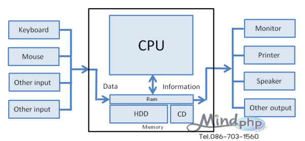

| หน้าแรก | การทำงานของคอมพิวเตอร์ | องค์ประกอบของคอมพิวเตอร์ | การประกอบคอมพิวเตอร์ | ฮาร์ดแวร์คอมพิวเตอร์ |
องค์ประกอบของคอมพิวเตอร์ องค์ประกอบของคอมพิวเตอร์ มี 4 ส่วน คือ ฮาร์ดแวร์, ซอฟต์แวร์, บุคลากร, ข้อมูลและสารสนเทศ คอมพิวเตอร์ คือ อุปกรณ์ทางอิเล็กทรอนิกส์ electronic device (อิเล็กทรอนิกส์ ดีไว) ที่มนุษย์ใช้เป็นเครื่องมือช่วยในการจัดการกับข้อมูลที่อาจเป็นได้ทั้งตัวเลข ตัวอักษร หรือสัญลักษณ์อื่นที่ใช้แทนความหมายในสิ่งต่าง ๆ คอมพิวเตอร์สามารถทำงานได้หลากหลายรูปแบบ ขึ้นอยู่กับชุดคำสั่งที่เลือกมาใช้งานทำให้สามารถนำคอมพิวเตอร์ไปประยุกต์ใช้งานได้อย่างกว้างขวาง ระบบคอมพิวเตอร์ประกอบด้วยองค์ประกอบสำคัญ 4 ส่วน คือ ฮาร์ดแวร์, ซอฟต์แวร์, บุคลากร, ข้อมูลและสารสนเทศ

|